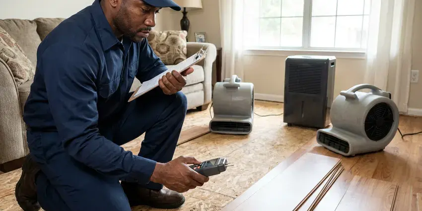

Slab Leak Detection in Chino, CA
A hidden slab leak can damage your home's foundation in Chino, CA. We use advanced technology to pinpoint leaks without unnecessary disruption.
- Same-Day Slab Leak Testing
- Insurance Documentation Provided
- Accurate Leak Detection
- Foundation Safety

Need Slab Leak Detection in Chino, CA?
Accurate locating means a smaller hole, a faster repair and less damage to your floors.
Your Specialists for Slab Leak Detection in Chino, CA
FKM Plumbing detects leaks in water lines buried in or under concrete slab foundations. We isolate hot and cold lines with pressure tests, trace pipe routes with line locators and listen for the leak through the concrete with ground microphones.
Our expertise includes:
- Thermal imaging to identify small temperature changes
- Thermal imaging to trace hot water leaks through flooring
- Video inspection for pipe condition assessment

Additional Plumbing Maintenance Services in Chino, CA
Our maintenance and specialty plumbing services in Chino, CA protect your home year-round and extend the life of every system.


Customers
Why Choose FKM Plumbing for Slab Leak Detection in Chino, CA?
A slab leak can waste thousands of gallons, crack tile, warp wood floors and weaken the soil under your foundation. Finding it precisely is the first step to a repair that does not tear up your whole house.
- Honest Options, We compare spot repair, reroute and repipe so you choose what fits your home.
- Foundation Focus, Our methods are designed to protect your home's structural integrity, a critical concern for Southern California homeowners.
- Insurance Ready, We document findings with photos and readings for your insurance claim.
Citywide Coverage
FKM Plumbing serves every neighborhood in Chino, so no matter where you are, expert slab leak detection is just a call away. We understand the plumbing layouts common in different parts of Chino.
Experienced Team
Our team of licensed plumbers has extensive experience with slab leak detection and is trained in how climate and soil conditions affect slab plumbing. We know how shifting soils can stress underground pipes, leading to leaks.
Safety-First Approach
At FKM Plumbing, safety and code compliance are top priorities for every slab leak detection project. We adhere to all local plumbing codes in Chino, CA and state regulations to protect the integrity and safety of your home's plumbing system.
Trusted Certified Chino Plumbing Services Professionals
At FKM Plumbing, we take pride in providing licensed, certified plumbing services throughout Chino, CA. Backed by recognized industry credentials, our experienced plumbers combine technical skill with genuine customer care. Whether it is repair, installation, or maintenance, we follow strict safety and quality standards to deliver long-lasting results you can trust.
Call Us Now PHCC Plumbing Contractor Recognition
PHCC Plumbing Contractor Recognition Better Business Bureau (BBB) Accreditation
Better Business Bureau (BBB) Accreditation Angi Certified Pro
Angi Certified Pro ISO 9001 Quality Management Certification
ISO 9001 Quality Management CertificationPinpoint Slab Leak Detection Services in Chino, CA
Emergency Slab Leak Services in Chino, CA
A sudden, severe slab leak can cause rapid damage to your property. FKM Plumbing offers emergency slab leak detection services across Chino, CA when you need immediate assistance. Our rapid response team is equipped to handle urgent situations, limiting damage and providing timely solutions to protect your home or business from extensive water harm.

Thermal Imaging for Slab Leaks in Chino, CA
Thermal imaging cameras allow us to visualize temperature differences on surfaces, which can indicate a hidden water leak. As water escapes a hot water line, it creates a clear thermal signature on the concrete slab. This technique is particularly useful for hot water line leaks and helps us narrow down the search area quickly without any physical disruption to your property in Chino.
Slab Leak Reroutes in Chino
Rerouting abandons the leaking line under the slab and runs new pipe through the walls or attic. It avoids breaking concrete and often costs less than direct access under finished floors. We typically use PEX for reroutes because it handles heat and resists hard-water corrosion. This option is popular when the slab is covered in tile or hardwood.
Pressure Testing & Isolation in Chino
When a leak is suspected, we can perform pressure tests on individual water lines. By isolating sections of your plumbing system and monitoring pressure gauges, we can confirm the presence of a leak and often determine which specific line is compromised. This step-by-step approach is crucial for homes with complex plumbing layouts, giving you an accurate diagnosis before any excavation in Chino, CA.
Cold Water Slab Leak Detection in Chino, CA
Cold water slab leaks do not create warm spots, so they are harder to see. They often show up as a running water meter, damp carpet, a musty smell or water seeping at baseboards. We isolate the cold side and use acoustic equipment to listen for the leak through the slab. Line tracers map the pipe route so we know exactly where to listen.
Non-Invasive Leak Detection in Chino, CA
Our primary goal is to locate your slab leak with the least amount of disruption possible. We prioritize non-invasive techniques like acoustic and thermal imaging before considering any intrusive methods. This approach saves your home in Chino, CA from unnecessary damage, preserves your landscaping and reduces the overall cost and time of the repair process.
Slab Leak Repair Through Direct Access in Chino, CA
When a single leak is found on otherwise healthy pipe, direct access can be the most economical repair. We cut a small opening in the floor at the marked spot, repair the pipe and pressure test it. Then we patch the concrete and leave the area ready for flooring. Accurate detection keeps that opening as small as possible.

Electronic Leak Detection in Chino
For hard-to-find leaks, our electronic leak detection equipment sends a signal through your pipes and measures changes that indicate a breach. This technology allows us to locate leaks in various pipe materials, including copper, PEX and PVC, commonly found in Chino homes. It helps prevent exploratory digging, saving you time and money.
Slab Leak Detection Service Near Me in Chino, CA
We know the slab types and plumbing materials used in homes built across different decades around Chino. That background helps us locate leaks more quickly and recommend the right repair. Local service also means simple follow-up if anything comes up later.
When you search for "slab leak detection near me" in Chino, CA, FKM Plumbing is your local, trusted expert. We are deeply familiar with the plumbing infrastructure and common issues affecting homes in this area, including those caused by climate and soil conditions. Our proximity allows for swift response times and personalized service.
FKM Plumbing at a Glance
- Fully licensed plumbing team covering Chino, CA
- 24/7 emergency service with same-day scheduling
- Clear written estimates, no hidden fees
- 4.8-star rated by 754+ Southern California customers
Chino Map
Chino Information
- Population
- 93,114
- Area codes
- 909/951/626
- Service area
- Chino and communities within 40 miles
- Nearby
- Eastvale, Chino Hills, Ontario, Pomona
Many homes in Chino, CA are built on concrete slabs with water lines running underneath, which makes under-slab pipe leaks one of the most common and costly plumbing problems in the area. Copper pinhole leaks and corroded cast iron drains are common repair calls in homes that are now several decades old.
Expert Services
Trust our professionals for reliable FKM Plumbing solutions in Chino, CA.
Our Specialized Plumbing Services in Chino, CA
At FKM Plumbing, we provide a complete range of plumbing services across Chino, CA. From leak detection to full system installations, our team ensures fast, precise, and affordable service for both residential and commercial properties. Explore our core services below:


How Our Slab Leak Detection Service Works in Chino, CA
We follow a methodical approach to accurately pinpoint the source of your slab leak, giving you a precise diagnosis and effective repair plan for your Chino, CA property.
Request a Quote
Call (213) 871-0701 to schedule your slab leak detection service. Our team will gather initial information about your concerns and arrange a convenient time for an on-site visit.
On-Site Inspection
Our experienced technicians arrive at your Chino home, performing a visual assessment and using equipment like acoustic listening devices and thermal cameras to identify the leak's location.
Diagnosis & Plan
Once the leak is precisely located, we provide a detailed diagnosis and present you with clear options for repair. We discuss the best course of action to resolve the issue effectively.
Frequently Asked Questions About Slab Leak Detection in Chino
The cost for professional slab leak detection in Chino, CA typically ranges from $250 to $700, depending on the complexity of the leak and the time required for diagnosis. This initial detection fee is separate from any repair costs, which can vary widely based on the leak's location and required pipe repair.
Many policies cover the cost to access the leak and repair resulting water damage, though the pipe itself may not be covered. Coverage varies by insurer. We provide photos and a detailed report for your claim.
For major slab leak repairs, especially those involving excavation or extensive re-piping, a plumbing permit from the local building department is often required. FKM Plumbing handles all necessary permitting processes so your repair is compliant with local codes and regulations, protecting your investment.
Common pipe materials prone to slab leaks include older copper pipes susceptible to corrosion from hard water or soil acidity, and sometimes PEX or CPVC if they were improperly installed or exposed to extreme temperatures. Galvanized steel pipes, though less common under slabs today, can also corrode and leak.
Yes. Water leaking under the slab can cause expansive soil to swell or wash away supporting soil. Over time this can lead to cracks and settling. Fixing leaks quickly protects the foundation.
Expansive clay and hillside soils can shift over time, putting stress on slab plumbing and separating older sewer joints. Hard water can also corrode copper pipes from the inside. Pipes can wear against concrete or gravel as they expand with hot water, and over time these factors cause pinholes and cracks.
While the detection process itself typically doesn't require a permit, any subsequent repair work involving the excavation of the slab or significant plumbing alterations will likely require a plumbing permit from the local building department. FKM Plumbing takes care of all necessary permits for repair work.
Common signs of a slab leak include unusually high water bills, warm spots on your floor, the sound of running water when no fixtures are in use, visible cracks in the foundation, damp or wet spots on carpets or flooring and a sudden drop in water pressure. Musty odors can also point to moisture buildup.
What People Are Saying About Our Plumbing Experts?

Mark T.
When our office needed drain cleaning, FKM Plumbing provided quick, reliable service. The plumber arrived on time and made sure every drain flowed perfectly before leaving. Very satisfied.
Drain Cleaning · Pomona, CA
Emily R.
I called FKM Plumbing for plumbing repair, and the technician was fast, polite, and thorough. They explained the problem clearly and fixed it the same day. I will definitely hire them again. Highly recommended!
Plumbing Repair · Ontario, CA
James P.
Our commercial plumbing system had a leak under the sink, and FKM Plumbing handled it professionally. The plumbers arrived quickly and restored everything without disruption to our customers.
Commercial Plumbing · Chino Hills, CA
Patricia H.
We had a slab leak that two other companies could not find. FKM Plumbing located it in under an hour, explained our options, and the price matched the quote to the dollar.
Slab Leak Repair · Eastvale, CA
Sofia M.
Two new toilets installed in one visit, no mess left behind, and the tech even adjusted a faucet he noticed was dripping. Fair pricing and really friendly.
Toilet Installation · Chino, CARobert G.
The trenchless sewer replacement saved our front yard. They walked us through the camera inspection footage first so we knew exactly what we were paying for.
Sewer Line Replacement · Chino, CA